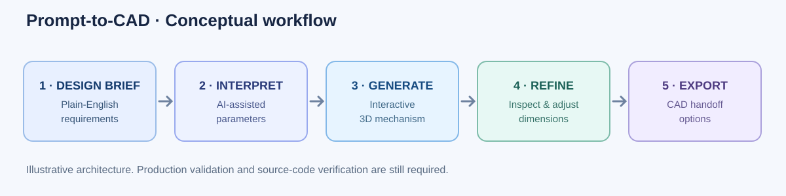

From plain English to mechanical design concepts.
A prototype exploring how AI-assisted specification and parametric 3D modeling can reduce repetitive work in early-stage mechanical design.

What the recorded prototype demonstrates
Start with an engineering prompt describing a component or mechanism.
Inspect generated 3D geometry and experiment with dimensional parameters and follow-up requests.
Review export options and engineering feedback shown in the prototype interface.
Mechanism examples
The demo includes a planetary gearset, rack-and-pinion geometry, and threaded hardware. These examples illustrate breadth of interaction, not verified production quality.
Why it matters
Internal, domain-specific AI tools could help engineering teams spend less time setting up repetitive geometry and more time evaluating function, tolerances, materials, and manufacturability.